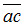
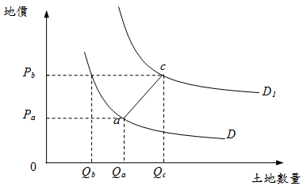

需求曲線後彎（需求法則例外的幻覺）
內文
我的台中土地經濟學課程即將於下週日開課，有興趣同學歡迎來聽看看。今日專欄為各位說明有關需求曲線後彎的情形，而經濟學則認為這是一種需求法則例外的幻覺：
當地價快速上漲，土地投機盛行，買方預期價格會持續上漲，故反而追漲不追跌，使需求線往右移動，而如果右移幅度夠大，則價格提高反而帶來更多需求量，使結果看起來像是需求法則的例外情況，類似季芬財（Giffen goods）現象。
以下圖為例，在D需求線上，當地價由Pa上升至Pb，土地需求量理應由Qa減至Qb，但若消費者預期價格上漲，而使需求線由D右移至D1，則對應於Pb，需求量反而增加為Qc。從事後結果來看(a點移動至c點)，[圖片1]線段似乎為正斜率的需求線。但實際上，[圖片2]並不是需求線，只是不同需求線上的點，移動所形成的價量軌跡。
[圖片3]
文章圖片

